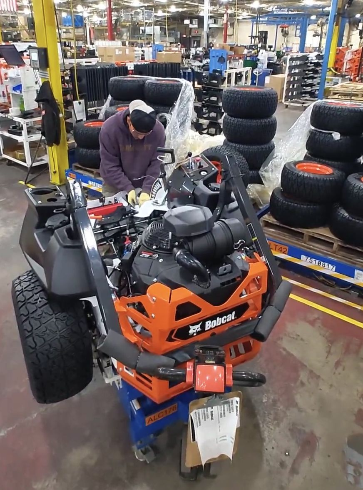

Mapped the real process
I supported process flow mapping, spaghetti diagrams, time studies, and ergonomic observations to capture how operators moved between the workbench, materials, tools, and assembly cart.
Kaizen Team Consultant | Johnson Creek, WI | Sep 2024 - Dec 2024
I led a cross-functional Kaizen team focused on the ZT2 mower sub-assembly tire installation workstation. The work combined 5S, PDCA, root cause analysis, spaghetti diagrams, time studies, ergonomic assessment, and Lean Six Sigma methods to identify bottlenecks, implement a low-cost material handling solution for tire lifting, and verify the resulting process improvement.

Process efficiency improvement
Cycle-time reduction from MOST analysis
Workstation organization and audit focus
Pareto, 8D, and 5 Why problem solving
What I Worked On
The project started with a simple question: why was tire installation taking more effort and movement than it should? I helped the team compare the intended work instructions with what operators actually had to do at the station.
I supported process flow mapping, spaghetti diagrams, time studies, and ergonomic observations to capture how operators moved between the workbench, materials, tools, and assembly cart.
I used RCA methods including Pareto analysis, 8D, and 5 Why techniques to identify the critical bottlenecks and understand why non-value-added movement was happening.
I helped implement a low-cost material handling approach that reduced tire-lifting strain and improved the station layout through Lean Six Sigma thinking, 5S improvements, and practical shop-floor changes.
PDCA Framework
Studied the ZT2 workstation using process flow, SIPOC, spaghetti diagrams, time studies, and ergonomic assessment.
Implemented workstation organization, 5S action items, tire-lifting ergonomics, and material handling changes.
Verified cycle-time reduction, process-efficiency improvement, and feasibility using MOST analysis and evaluation practices.
Used checklists, audits, visual aids, and communication practices to help sustain the improved workstation behavior.
Project Outcome
Skills Built
This project strengthened the way I connect operator observation, lean tools, ergonomic thinking, and financial feasibility into one improvement story.
5S, PDCA, NVA waste reduction, workstation organization
Spaghetti diagrams, time studies, MOST, Pareto, 8D, 5 Why
Tire-lifting risk assessment and implemented material handling solution
Cross-functional Kaizen leadership and operator-centered improvement